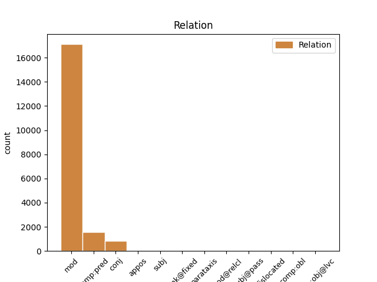
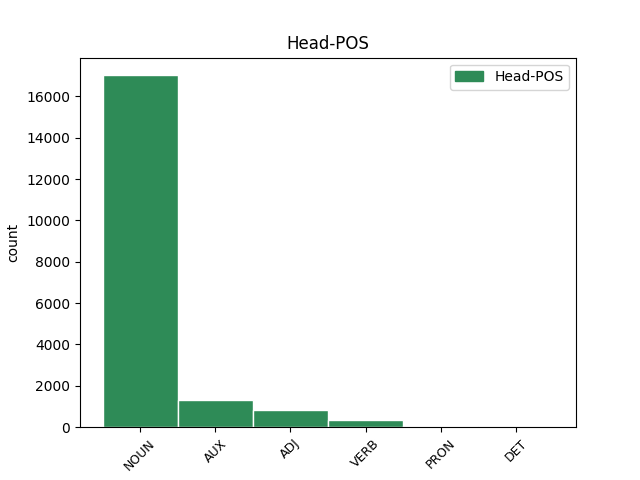
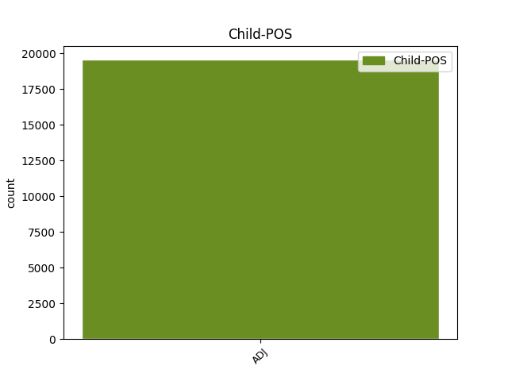

Distribution of features within this leaf



Agreement Rules sorted by frequency.
- When the dependent token is the modifer(mod) of the head token, and the dependent token is ADJ.
1 Selon _ _ _ _ 0 _ _ _
2 une _ _ _ _ 0 _ _ _
3 première _ _ _ _ 0 _ _ _
4 hypothèse _ _ _ _ 0 _ _ _
5 , _ _ _ _ 0 _ _ _
6 l' _ _ _ _ 0 _ _ _
7 origine _ _ _ _ 0 _ _ _
8 est _ _ _ _ 0 _ _ _
9 issue _ _ _ _ 0 _ _ _
10 de _ _ _ _ 0 _ _ _
11 l' _ _ _ _ 0 _ _ _
12 appelatif _ _ _ _ 0 _ _ _
13 gaulois _ _ _ _ 0 _ _ _
14 alpe _ _ _ _ 0 _ _ _
15 , _ _ _ _ 0 _ _ _
16 lui-même _ _ _ _ 0 _ _ _
17 issu _ _ _ _ 0 _ _ _
18 d' _ _ _ _ 0 _ _ _
19 une _ _ _ _ 0 _ _ _
20 racine _ _ _ _ 0 _ _ _
21 celtique _ _ _ _ 0 _ _ _
22 ou _ _ _ _ 0 _ _ _
23 pré-celtique _ _ _ _ 0 _ _ _
24 alp _ _ _ _ 0 _ _ _
25 qui _ _ _ _ 0 _ _ _
26 viendrait _ _ _ _ 0 _ _ _
27 dalbos _ _ _ _ 0 _ _ _
28 signifiant _ _ _ _ 0 _ _ _
29 selon _ _ _ _ 0 _ _ _
30 Delamarre _ _ _ _ 0 _ _ _
31 « _ _ _ _ 0 _ _ _
32 le _ _ _ _ 0 _ _ _
33 monde monde NOUN _ Gender=Masc|Number=Sing 0 _ _ _
34 lumineux lumineux ADJ _ Gender=Masc|Number=Sing 33 mod _ SpaceAfter=No
35 , _ _ _ _ 0 _ _ _
36 le _ _ _ _ 0 _ _ _
37 monde _ _ _ _ 0 _ _ _
38 d' _ _ _ _ 0 _ _ _
39 en _ _ _ _ 0 _ _ _
40 haut _ _ _ _ 0 _ _ _
41 » _ _ _ _ 0 _ _ _
42 . _ _ _ _ 0 _ _ _
1 Selon _ _ _ _ 0 _ _ _
2 une _ _ _ _ 0 _ _ _
3 première _ _ _ _ 0 _ _ _
4 hypothèse _ _ _ _ 0 _ _ _
5 , _ _ _ _ 0 _ _ _
6 l' _ _ _ _ 0 _ _ _
7 origine _ _ _ _ 0 _ _ _
8 est être AUX _ Mood=Ind|Number=Sing|Person=3|Tense=Pres|VerbForm=Fin 0 _ _ _
9 issue issu ADJ _ Gender=Fem|Number=Sing 8 comp:pred _ _
10 de _ _ _ _ 0 _ _ _
11 l' _ _ _ _ 0 _ _ _
12 appelatif _ _ _ _ 0 _ _ _
13 gaulois _ _ _ _ 0 _ _ _
14 alpe _ _ _ _ 0 _ _ _
15 , _ _ _ _ 0 _ _ _
16 lui-même _ _ _ _ 0 _ _ _
17 issu _ _ _ _ 0 _ _ _
18 d' _ _ _ _ 0 _ _ _
19 une _ _ _ _ 0 _ _ _
20 racine _ _ _ _ 0 _ _ _
21 celtique _ _ _ _ 0 _ _ _
22 ou _ _ _ _ 0 _ _ _
23 pré-celtique _ _ _ _ 0 _ _ _
24 alp _ _ _ _ 0 _ _ _
25 qui _ _ _ _ 0 _ _ _
26 viendrait _ _ _ _ 0 _ _ _
27 dalbos _ _ _ _ 0 _ _ _
28 signifiant _ _ _ _ 0 _ _ _
29 selon _ _ _ _ 0 _ _ _
30 Delamarre _ _ _ _ 0 _ _ _
31 « _ _ _ _ 0 _ _ _
32 le _ _ _ _ 0 _ _ _
33 monde _ _ _ _ 0 _ _ _
34 lumineux _ _ _ _ 0 _ _ _
35 , _ _ _ _ 0 _ _ _
36 le _ _ _ _ 0 _ _ _
37 monde _ _ _ _ 0 _ _ _
38 d' _ _ _ _ 0 _ _ _
39 en _ _ _ _ 0 _ _ _
40 haut _ _ _ _ 0 _ _ _
41 » _ _ _ _ 0 _ _ _
42 . _ _ _ _ 0 _ _ _
1 Selon _ _ _ _ 0 _ _ _
2 une _ _ _ _ 0 _ _ _
3 première _ _ _ _ 0 _ _ _
4 hypothèse _ _ _ _ 0 _ _ _
5 , _ _ _ _ 0 _ _ _
6 l' _ _ _ _ 0 _ _ _
7 origine _ _ _ _ 0 _ _ _
8 est _ _ _ _ 0 _ _ _
9 issue _ _ _ _ 0 _ _ _
10 de _ _ _ _ 0 _ _ _
11 l' _ _ _ _ 0 _ _ _
12 appelatif _ _ _ _ 0 _ _ _
13 gaulois _ _ _ _ 0 _ _ _
14 alpe _ _ _ _ 0 _ _ _
15 , _ _ _ _ 0 _ _ _
16 lui-même _ _ _ _ 0 _ _ _
17 issu _ _ _ _ 0 _ _ _
18 d' _ _ _ _ 0 _ _ _
19 une _ _ _ _ 0 _ _ _
20 racine _ _ _ _ 0 _ _ _
21 celtique celtique ADJ _ Gender=Fem|Number=Sing 0 _ _ _
22 ou _ _ _ _ 0 _ _ _
23 pré-celtique pré-celtique ADJ _ Gender=Fem|Number=Sing 21 conj _ _
24 alp _ _ _ _ 0 _ _ _
25 qui _ _ _ _ 0 _ _ _
26 viendrait _ _ _ _ 0 _ _ _
27 dalbos _ _ _ _ 0 _ _ _
28 signifiant _ _ _ _ 0 _ _ _
29 selon _ _ _ _ 0 _ _ _
30 Delamarre _ _ _ _ 0 _ _ _
31 « _ _ _ _ 0 _ _ _
32 le _ _ _ _ 0 _ _ _
33 monde _ _ _ _ 0 _ _ _
34 lumineux _ _ _ _ 0 _ _ _
35 , _ _ _ _ 0 _ _ _
36 le _ _ _ _ 0 _ _ _
37 monde _ _ _ _ 0 _ _ _
38 d' _ _ _ _ 0 _ _ _
39 en _ _ _ _ 0 _ _ _
40 haut _ _ _ _ 0 _ _ _
41 » _ _ _ _ 0 _ _ _
42 . _ _ _ _ 0 _ _ _
1 Les _ _ _ _ 0 _ _ _
2 plus _ _ _ _ 0 _ _ _
3 jeunes jeune ADJ _ Gender=Masc|Number=Plur 5 subj _ _
4 ne _ _ _ _ 0 _ _ _
5 pourront pouvoir VERB _ Mood=Ind|Number=Plur|Person=3|Tense=Fut|VerbForm=Fin 0 _ _ _
6 être _ _ _ _ 0 _ _ _
7 sensibilisés _ _ _ _ 0 _ _ _
8 par _ _ _ _ 0 _ _ _
9 cette _ _ _ _ 0 _ _ _
10 vie _ _ _ _ 0 _ _ _
11 en _ _ _ _ 0 _ _ _
12 harmonie _ _ _ _ 0 _ _ _
13 avec _ _ _ _ 0 _ _ _
14 les _ _ _ _ 0 _ _ _
15 animaux _ _ _ _ 0 _ _ _
16 , _ _ _ _ 0 _ _ _
17 bien _ _ _ _ 0 _ _ _
18 éloignée _ _ _ _ 0 _ _ _
19 de _ _ _ _ 0 _ _ _
20 l' _ _ _ _ 0 _ _ _
21 élevage _ _ _ _ 0 _ _ _
22 intensif _ _ _ _ 0 _ _ _
23 . _ _ _ _ 0 _ _ _
1 Phlegrata _ _ _ _ 0 _ _ _
2 pala _ _ _ _ 0 _ _ _
3 est _ _ _ _ 0 _ _ _
4 une _ _ _ _ 0 _ _ _
5 espèce espèce NOUN _ Gender=Fem|Number=Sing 0 _ _ _
6 fossile _ _ _ _ 0 _ _ _
7 d' _ _ _ _ 0 _ _ _
8 araignées _ _ _ _ 0 _ _ _
9 aranéomorphes _ _ _ _ 0 _ _ _
10 de _ _ _ _ 0 _ _ _
11 la _ _ _ _ 0 _ _ _
12 famille _ _ _ _ 0 _ _ _
13 de _ _ _ _ 0 _ _ _
14 les _ _ _ _ 0 _ _ _
15 Salticidae _ _ _ _ 0 _ _ _
16 , _ _ _ _ 0 _ _ _
17 la _ _ _ _ 0 _ _ _
18 seule seul ADJ _ Gender=Fem|Number=Sing 5 appos _ _
19 de _ _ _ _ 0 _ _ _
20 le _ _ _ _ 0 _ _ _
21 genre _ _ _ _ 0 _ _ _
22 Phlegrata _ _ _ _ 0 _ _ _
23 . _ _ _ _ 0 _ _ _
1 Faut _ _ _ _ 0 _ _ _
2 -il _ _ _ _ 0 _ _ _
3 alors _ _ _ _ 0 _ _ _
4 , _ _ _ _ 0 _ _ _
5 demain _ _ _ _ 0 _ _ _
6 , _ _ _ _ 0 _ _ _
7 donner _ _ _ _ 0 _ _ _
8 un _ _ _ _ 0 _ _ _
9 prix _ _ _ _ 0 _ _ _
10 à _ _ _ _ 0 _ _ _
11 l' _ _ _ _ 0 _ _ _
12 eau _ _ _ _ 0 _ _ _
13 , _ _ _ _ 0 _ _ _
14 fixé _ _ _ _ 0 _ _ _
15 sur _ _ _ _ 0 _ _ _
16 un _ _ _ _ 0 _ _ _
17 marché _ _ _ _ 0 _ _ _
18 international _ _ _ _ 0 _ _ _
19 , _ _ _ _ 0 _ _ _
20 comme _ _ _ _ 0 _ _ _
21 n' _ _ _ _ 0 _ _ _
22 importe importer VERB _ Mood=Ind|Number=Sing|Person=3|Tense=Pres|VerbForm=Fin 0 _ _ _
23 quel quel ADJ _ Gender=Fem|Number=Sing 22 unk@fixed _ _
24 matière _ _ _ _ 0 _ _ _
25 première _ _ _ _ 0 _ _ _
26 , _ _ _ _ 0 _ _ _
27 pour _ _ _ _ 0 _ _ _
28 éviter _ _ _ _ 0 _ _ _
29 les _ _ _ _ 0 _ _ _
30 gaspillages _ _ _ _ 0 _ _ _
31 ? _ _ _ _ 0 _ _ _
1 la _ _ _ _ 0 _ _ _
2 musique _ _ _ _ 0 _ _ _
3 n' _ _ _ _ 0 _ _ _
4 est être AUX _ Mood=Ind|Number=Sing|Person=3|Tense=Pres|VerbForm=Fin 0 _ _ _
5 pas _ _ _ _ 0 _ _ _
6 adaptée _ _ _ _ 0 _ _ _
7 à _ _ _ _ 0 _ _ _
8 le _ _ _ _ 0 _ _ _
9 lieu _ _ _ _ 0 _ _ _
10 ( _ _ _ _ 0 _ _ _
11 électro électro ADJ _ Gender=Fem|Number=Sing 4 parataxis _ SpaceAfter=No
12 ) _ _ _ _ 0 _ _ _
13 . _ _ _ _ 0 _ _ _
1 Or _ _ _ _ 0 _ _ _
2 , _ _ _ _ 0 _ _ _
3 de _ _ _ _ 0 _ _ _
4 nouveaux _ _ _ _ 0 _ _ _
5 outils outil NOUN _ Gender=Masc|Number=Plur 0 _ _ _
6 informatiques _ _ _ _ 0 _ _ _
7 , _ _ _ _ 0 _ _ _
8 dont _ _ _ _ 0 _ _ _
9 collaboratifs collaboratif ADJ _ Gender=Masc|Number=Plur 5 mod@relcl _ _
10 et _ _ _ _ 0 _ _ _
11 de _ _ _ _ 0 _ _ _
12 type _ _ _ _ 0 _ _ _
13 SIG _ _ _ _ 0 _ _ _
14 permettent _ _ _ _ 0 _ _ _
15 de _ _ _ _ 0 _ _ _
16 mieux _ _ _ _ 0 _ _ _
17 l' _ _ _ _ 0 _ _ _
18 organiser _ _ _ _ 0 _ _ _
19 et _ _ _ _ 0 _ _ _
20 la _ _ _ _ 0 _ _ _
21 valoriser _ _ _ _ 0 _ _ _
22 dans _ _ _ _ 0 _ _ _
23 la _ _ _ _ 0 _ _ _
24 sphère _ _ _ _ 0 _ _ _
25 de _ _ _ _ 0 _ _ _
26 le _ _ _ _ 0 _ _ _
27 Web _ _ _ _ 0 _ _ _
28 ( _ _ _ _ 0 _ _ _
29 c' _ _ _ _ 0 _ _ _
30 est _ _ _ _ 0 _ _ _
31 le _ _ _ _ 0 _ _ _
32 cas _ _ _ _ 0 _ _ _
33 de _ _ _ _ 0 _ _ _
34 le _ _ _ _ 0 _ _ _
35 Web _ _ _ _ 0 _ _ _
36 sémantique _ _ _ _ 0 _ _ _
37 et _ _ _ _ 0 _ _ _
38 de _ _ _ _ 0 _ _ _
39 Wikipédia _ _ _ _ 0 _ _ _
40 par _ _ _ _ 0 _ _ _
41 exemple _ _ _ _ 0 _ _ _
42 ) _ _ _ _ 0 _ _ _
43 . _ _ _ _ 0 _ _ _
1 Le _ _ _ _ 0 _ _ _
2 plus _ _ _ _ 0 _ _ _
3 cool cool ADJ _ Gender=Masc|Number=Sing 6 dislocated _ SpaceAfter=No
4 , _ _ _ _ 0 _ _ _
5 c' _ _ _ _ 0 _ _ _
6 est être VERB _ Mood=Ind|Number=Sing|Person=3|Tense=Pres|VerbForm=Fin 0 _ _ _
7 que _ _ _ _ 0 _ _ _
8 la _ _ _ _ 0 _ _ _
9 piste _ _ _ _ 0 _ _ _
10 est _ _ _ _ 0 _ _ _
11 vraiment _ _ _ _ 0 _ _ _
12 adhérente _ _ _ _ 0 _ _ _
13 : _ _ _ _ 0 _ _ _
14 rien _ _ _ _ 0 _ _ _
15 à _ _ _ _ 0 _ _ _
16 voir _ _ _ _ 0 _ _ _
17 avec _ _ _ _ 0 _ _ _
18 les _ _ _ _ 0 _ _ _
19 pistes _ _ _ _ 0 _ _ _
20 de _ _ _ _ 0 _ _ _
21 kart _ _ _ _ 0 _ _ _
22 en _ _ _ _ 0 _ _ _
23 béton _ _ _ _ 0 _ _ _
24 que _ _ _ _ 0 _ _ _
25 j' _ _ _ _ 0 _ _ _
26 ai _ _ _ _ 0 _ _ _
27 vues _ _ _ _ 0 _ _ _
28 partout _ _ _ _ 0 _ _ _
29 ! _ _ _ _ 0 _ _ _
1 de _ _ _ _ 0 _ _ _
2 le _ _ _ _ 0 _ _ _
3 13 _ _ _ _ 0 _ _ _
4 décembre _ _ _ _ 0 _ _ _
5 1994 _ _ _ _ 0 _ _ _
6 à _ _ _ _ 0 _ _ _
7 mars _ _ _ _ 0 _ _ _
8 1997 _ _ _ _ 0 _ _ _
9 , _ _ _ _ 0 _ _ _
10 la _ _ _ _ 0 _ _ _
11 Cinquième cinquième ADJ _ Gender=Fem|Number=Sing 12 subj@pass _ _
12 était être AUX _ Mood=Ind|Number=Sing|Person=3|Tense=Imp|VerbForm=Fin 0 _ _ _
13 éditée _ _ _ _ 0 _ _ _
14 par _ _ _ _ 0 _ _ _
15 la _ _ _ _ 0 _ _ _
16 société _ _ _ _ 0 _ _ _
17 nationale _ _ _ _ 0 _ _ _
18 de _ _ _ _ 0 _ _ _
19 programme _ _ _ _ 0 _ _ _
20 publique _ _ _ _ 0 _ _ _
21 la _ _ _ _ 0 _ _ _
22 Télévision _ _ _ _ 0 _ _ _
23 de _ _ _ _ 0 _ _ _
24 le _ _ _ _ 0 _ _ _
25 savoir _ _ _ _ 0 _ _ _
26 , _ _ _ _ 0 _ _ _
27 de _ _ _ _ 0 _ _ _
28 la _ _ _ _ 0 _ _ _
29 formation _ _ _ _ 0 _ _ _
30 et _ _ _ _ 0 _ _ _
31 de _ _ _ _ 0 _ _ _
32 l' _ _ _ _ 0 _ _ _
33 emploi _ _ _ _ 0 _ _ _
34 détenue _ _ _ _ 0 _ _ _
35 à _ _ _ _ 0 _ _ _
36 100 _ _ _ _ 0 _ _ _
37 % _ _ _ _ 0 _ _ _
38 par _ _ _ _ 0 _ _ _
39 l' _ _ _ _ 0 _ _ _
40 État _ _ _ _ 0 _ _ _
41 français _ _ _ _ 0 _ _ _
42 . _ _ _ _ 0 _ _ _
1 Célestin _ _ _ _ 0 _ _ _
2 Leroy _ _ _ _ 0 _ _ _
3 Gaombalet _ _ _ _ 0 _ _ _
4 est _ _ _ _ 0 _ _ _
5 né naître VERB _ Gender=Masc|Number=Sing|Tense=Past|VerbForm=Part 0 _ _ _
6 le _ _ _ _ 0 _ _ _
7 1er 1er ADJ _ Gender=Masc|Number=Sing 5 comp:obl _ _
8 janvier _ _ _ _ 0 _ _ _
9 1942 _ _ _ _ 0 _ _ _
10 à _ _ _ _ 0 _ _ _
11 Grimari _ _ _ _ 0 _ _ _
12 en _ _ _ _ 0 _ _ _
13 Centrafrique _ _ _ _ 0 _ _ _
14 . _ _ _ _ 0 _ _ _
Disagree Examples:
1 Les _ _ _ _ 0 _ _ _
2 commotions _ _ _ _ 0 _ _ _
3 cérébrales _ _ _ _ 0 _ _ _
4 sont _ _ _ _ 0 _ _ _
5 devenu devenir VERB _ Gender=Masc|Number=Sing|Tense=Past|Typo=Yes|VerbForm=Part 0 _ _ _
6 si _ _ _ _ 0 _ _ _
7 courantes courant ADJ _ Gender=Fem|Number=Plur 5 comp:pred _ _
8 dans _ _ _ _ 0 _ _ _
9 ce _ _ _ _ 0 _ _ _
10 sport _ _ _ _ 0 _ _ _
11 qu' _ _ _ _ 0 _ _ _
12 on _ _ _ _ 0 _ _ _
13 les _ _ _ _ 0 _ _ _
14 considére _ _ _ _ 0 _ _ _
15 presque _ _ _ _ 0 _ _ _
16 comme _ _ _ _ 0 _ _ _
17 la _ _ _ _ 0 _ _ _
18 routine _ _ _ _ 0 _ _ _
19 . _ _ _ _ 0 _ _ _
1 Le _ _ _ _ 0 _ _ _
2 label _ _ _ _ 0 _ _ _
3 a _ _ _ _ 0 _ _ _
4 sorti _ _ _ _ 0 _ _ _
5 plusieurs _ _ _ _ 0 _ _ _
6 albums _ _ _ _ 0 _ _ _
7 de _ _ _ _ 0 _ _ _
8 groupe _ _ _ _ 0 _ _ _
9 influent _ _ _ _ 0 _ _ _
10 , _ _ _ _ 0 _ _ _
11 sinon _ _ _ _ 0 _ _ _
12 des _ _ _ _ 0 _ _ _
13 groupe _ _ _ _ 0 _ _ _
14 " _ _ _ _ 0 _ _ _
15 genre-defining _ _ _ _ 0 _ _ _
16 " _ _ _ _ 0 _ _ _
17 , _ _ _ _ 0 _ _ _
18 incluent _ _ _ _ 0 _ _ _
19 7 _ _ _ _ 0 _ _ _
20 Seconds _ _ _ _ 0 _ _ _
21 et _ _ _ _ 0 _ _ _
22 SNFU _ _ _ _ 0 _ _ _
23 dans _ _ _ _ 0 _ _ _
24 les _ _ _ _ 0 _ _ _
25 années _ _ _ _ 0 _ _ _
26 1980 _ _ _ _ 0 _ _ _
27 et _ _ _ _ 0 _ _ _
28 Leatherface _ _ _ _ 0 _ _ _
29 , _ _ _ _ 0 _ _ _
30 The _ _ _ _ 0 _ _ _
31 Unseen _ _ _ _ 0 _ _ _
32 , _ _ _ _ 0 _ _ _
33 Throw _ _ _ _ 0 _ _ _
34 Rag _ _ _ _ 0 _ _ _
35 , _ _ _ _ 0 _ _ _
36 Pistol _ _ _ _ 0 _ _ _
37 Grip _ _ _ _ 0 _ _ _
38 , _ _ _ _ 0 _ _ _
39 Souls _ _ _ _ 0 _ _ _
40 , _ _ _ _ 0 _ _ _
41 Youth _ _ _ _ 0 _ _ _
42 Brigade _ _ _ _ 0 _ _ _
43 / _ _ _ _ 0 _ _ _
44 Swinging _ _ _ _ 0 _ _ _
45 Utters _ _ _ _ 0 _ _ _
46 et _ _ _ _ 0 _ _ _
47 Alkaline _ _ _ _ 0 _ _ _
48 Trio _ _ _ _ 0 _ _ _
49 / _ _ _ _ 0 _ _ _
50 One _ _ _ _ 0 _ _ _
51 Man _ _ _ _ 0 _ _ _
52 Army _ _ _ _ 0 _ _ _
53 et _ _ _ _ 0 _ _ _
54 d' _ _ _ _ 0 _ _ _
55 autres autre ADJ _ Gender=Masc|Number=Plur 56 mod _ _
56 groupe groupe NOUN _ Gender=Masc|Number=Sing 0 _ _ _
57 de _ _ _ _ 0 _ _ _
58 nos _ _ _ _ 0 _ _ _
59 jours _ _ _ _ 0 _ _ _
60 . _ _ _ _ 0 _ _ _
1 Chaque _ _ _ _ 0 _ _ _
2 arrondissement _ _ _ _ 0 _ _ _
3 forme _ _ _ _ 0 _ _ _
4 un _ _ _ _ 0 _ _ _
5 secteur _ _ _ _ 0 _ _ _
6 municipal _ _ _ _ 0 _ _ _
7 , _ _ _ _ 0 _ _ _
8 à _ _ _ _ 0 _ _ _
9 l' _ _ _ _ 0 _ _ _
10 exception _ _ _ _ 0 _ _ _
11 de _ _ _ _ 0 _ _ _
12 les _ _ _ _ 0 _ _ _
13 1er _ _ _ _ 0 _ _ _
14 et _ _ _ _ 0 _ _ _
15 4e _ _ _ _ 0 _ _ _
16 arrondissement _ _ _ _ 0 _ _ _
17 , _ _ _ _ 0 _ _ _
18 d' _ _ _ _ 0 _ _ _
19 une _ _ _ _ 0 _ _ _
20 part _ _ _ _ 0 _ _ _
21 , _ _ _ _ 0 _ _ _
22 et _ _ _ _ 0 _ _ _
23 de _ _ _ _ 0 _ _ _
24 les _ _ _ _ 0 _ _ _
25 2e 2e ADJ _ Gender=Masc|Number=Sing 28 mod _ _
26 et _ _ _ _ 0 _ _ _
27 3e _ _ _ _ 0 _ _ _
28 arrondissements arrondissement NOUN _ Gender=Masc|Number=Plur 0 _ _ _
29 , _ _ _ _ 0 _ _ _
30 d' _ _ _ _ 0 _ _ _
31 autre _ _ _ _ 0 _ _ _
32 part _ _ _ _ 0 _ _ _
33 , _ _ _ _ 0 _ _ _
34 qui _ _ _ _ 0 _ _ _
35 forment _ _ _ _ 0 _ _ _
36 respectivement _ _ _ _ 0 _ _ _
37 les _ _ _ _ 0 _ _ _
38 1er _ _ _ _ 0 _ _ _
39 et _ _ _ _ 0 _ _ _
40 2e _ _ _ _ 0 _ _ _
41 secteurs _ _ _ _ 0 _ _ _
42 . _ _ _ _ 0 _ _ _
1 Chaque _ _ _ _ 0 _ _ _
2 arrondissement _ _ _ _ 0 _ _ _
3 forme _ _ _ _ 0 _ _ _
4 un _ _ _ _ 0 _ _ _
5 secteur _ _ _ _ 0 _ _ _
6 municipal _ _ _ _ 0 _ _ _
7 , _ _ _ _ 0 _ _ _
8 à _ _ _ _ 0 _ _ _
9 l' _ _ _ _ 0 _ _ _
10 exception _ _ _ _ 0 _ _ _
11 de _ _ _ _ 0 _ _ _
12 les _ _ _ _ 0 _ _ _
13 1er _ _ _ _ 0 _ _ _
14 et _ _ _ _ 0 _ _ _
15 4e _ _ _ _ 0 _ _ _
16 arrondissement _ _ _ _ 0 _ _ _
17 , _ _ _ _ 0 _ _ _
18 d' _ _ _ _ 0 _ _ _
19 une _ _ _ _ 0 _ _ _
20 part _ _ _ _ 0 _ _ _
21 , _ _ _ _ 0 _ _ _
22 et _ _ _ _ 0 _ _ _
23 de _ _ _ _ 0 _ _ _
24 les _ _ _ _ 0 _ _ _
25 2e _ _ _ _ 0 _ _ _
26 et _ _ _ _ 0 _ _ _
27 3e _ _ _ _ 0 _ _ _
28 arrondissements _ _ _ _ 0 _ _ _
29 , _ _ _ _ 0 _ _ _
30 d' _ _ _ _ 0 _ _ _
31 autre _ _ _ _ 0 _ _ _
32 part _ _ _ _ 0 _ _ _
33 , _ _ _ _ 0 _ _ _
34 qui _ _ _ _ 0 _ _ _
35 forment _ _ _ _ 0 _ _ _
36 respectivement _ _ _ _ 0 _ _ _
37 les _ _ _ _ 0 _ _ _
38 1er 1er ADJ _ Gender=Masc|Number=Sing 41 mod _ _
39 et _ _ _ _ 0 _ _ _
40 2e _ _ _ _ 0 _ _ _
41 secteurs secteur NOUN _ Gender=Masc|Number=Plur 0 _ _ _
42 . _ _ _ _ 0 _ _ _
1 Graham _ _ _ _ 0 _ _ _
2 devra _ _ _ _ 0 _ _ _
3 y _ _ _ _ 0 _ _ _
4 prélever _ _ _ _ 0 _ _ _
5 d' _ _ _ _ 0 _ _ _
6 autorité _ _ _ _ 0 _ _ _
7 48 _ _ _ _ 0 _ _ _
8 de _ _ _ _ 0 _ _ _
9 ces _ _ _ _ 0 _ _ _
10 nouveaux nouveau ADJ _ Gender=Masc|Number=Plur 11 mod _ _
11 fusil fusil NOUN _ Gender=Masc|Number=Sing 0 _ _ _
12 Henry _ _ _ _ 0 _ _ _
13 à _ _ _ _ 0 _ _ _
14 répétition _ _ _ _ 0 _ _ _
15 , _ _ _ _ 0 _ _ _
16 avec _ _ _ _ 0 _ _ _
17 5 000 _ _ _ _ 0 _ _ _
18 cartouches _ _ _ _ 0 _ _ _
19 , _ _ _ _ 0 _ _ _
20 pour _ _ _ _ 0 _ _ _
21 équiper _ _ _ _ 0 _ _ _
22 la _ _ _ _ 0 _ _ _
23 colonne _ _ _ _ 0 _ _ _
24 . _ _ _ _ 0 _ _ _